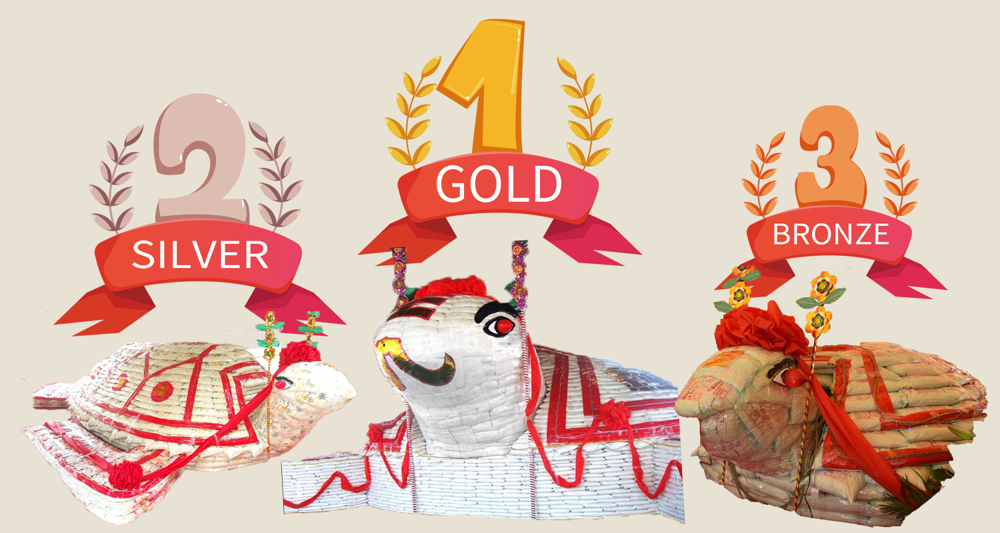
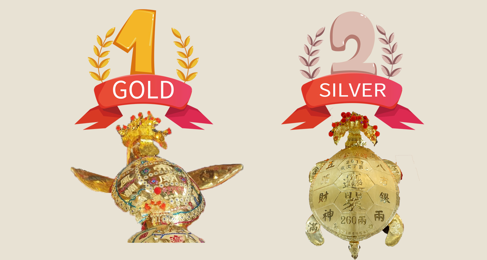

-
澎湖最大的米龜是誰呢?
第一名：36萬斤大米龜
你知道嗎？曾經有一個挑戰了世界紀錄的烏龜，凡是看過的人心中都會非常的震撼。 而這隻傳說的烏龜可說是非常的巨大，重達36萬斤，全長六十二台尺、寬三十八台尺、高九台尺，可以說是非常驚人的尺寸呢。 以下照片就可以看的出來，人在這隻龜面前是多麼的渺小。 而這隻36萬斤的米龜首次公開在大家面前是在2009年元宵節的時候，所屬於澎湖天后宮。 澎湖縣政府以36萬斤的國產白米，堆疊出這隻空前絕後的元宵大米龜，成為2009年萬龜祈福活動中最耀眼的明星，展示活動60天更是吸引了大批人潮前來觀摩，帶動了整個澎湖的熱鬧氣氛。 想當然爾，活動結束後這隻米龜勢必要拆下來，澎湖縣政府表示拆下來的米包，只要帶著戶口名簿就可以領取喔，更希望大家吃了平安米都能安和樂利、健康長壽。
-
第二名：2.2萬斤大米龜
現在要介紹的是澎湖第二大的米龜，重達2.2萬斤的米龜!! 這隻大米龜位於龍門觀音宮，活動一開始，這隻烏龜可能搞不好才幾百斤左右，但是隨著乞龜習俗一直不斷去請龜還龜，而烏龜的體積也越來越大成為了一個循環，從而產生我們現在所看到的這隻大米龜。 而這隻烏龜之所以會這麼大的原因，那是因為每年都是由謝氏家族加倍還願的結果，起初謝氏家族在2014年子女們為盡孝心，選擇祈求家鄉龍門觀音宮米龜包，一口氣將還願將4800斤米包龜，允諾增加至1萬2000斤。這隻米龜最後是由媽媽謝洪閨春，以6聖杯擲筊獲得，從此以後每年都以謝家為米包龜的得主，還願也一路由1萬2600成長到1萬8800、2萬斤，而2021年甚至還願到了2萬2000斤的米龜，還附帶兩隻小米包龜。今年乞得這隻大米龜的人，更是說出明年要還2萬5000斤的米龜呢。
-
第三名：1.2萬斤大米龜
雖然跟前者比較，幾乎是少了快一半的重量，僅只有1萬2000斤的米龜，從照片上看起來確實比往年缺少了很大的震撼度，這隻米龜是今年白坑玉聖殿配合防疫，縮小規模舉辦元宵節活動而產生的，縱使在疫情期間，仍努力維持傳統製作1萬2000斤的大米龜。 澎湖縣縣長表示，元宵節是澎湖最重要的活動，可以說是比過年還重要，但是今年因為疫情影響，為了避免群聚感染，許多的廟宇都配合取消或是簡化活動，乞龜最能代表澎湖的文化傳統及精神，只要你元宵節身在澎湖，路上大大小小的廟宇都會舉辦的活動，在澎湖絕對是最熱鬧的活動了！
-
第二名：260兩黃金龜
曾經的世界紀錄，位於鎖港北極殿擁有的260兩黃金龜，2017年曾被喜來登飯店的董事長以6聖杯乞得，之後便把這隻金龜乞回到喜來登酒店大廳，並且每天開放民眾觀賞、擲筊祈福，甚至還舉行優惠活動，只有你有在喜來登消費，就可以參與乞龜活動，就算是幾十塊也行，甚至還說了只要擲6聖筊者可以免費獲住宿一夜，7聖筊以上除了免費獲住宿一晚外，還可以摸龜頭、龜身與龜尾。除此之外還有很多很多的優惠，基本上可以說是有參與就有獎了。